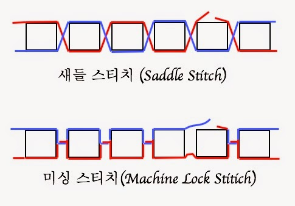

꿈이 뭐길래!
방학을 하면 꼭 하루종일 잠을 자야지 마음먹었고, 코로나 사태로 집에 있는 시간이 길어졌다.평소에 잠이 많아 눈만 감으면 잠을 잤는데, 이상하게 몸이 개운한 날도, 오히려 힘든 날도 있었다.기분 좋은 꿈도 있었고, 시험을 본다거나 좀비에게 도망치는 무서운 꿈은 잠이라는 행위가 무의미하게 느껴지게 한다. 도대체 꿈이란 무엇일까?
꿈을 정의하자면
꿈은 ‘수면 시 경험하는 일련의 영상, 소리, 생각, 감정 등의 느낌’을 말한다.일반적으로 수면 단계 중에서도 두뇌 활동이 가장 활발한 기간을 ‘렘(Rapid Eye Movement, REM)수면’이라고 한다.이를 흔히 얕은 잠이라고 하며, 이 상태에서 꿈을 꾼다.
꿈을 왜 꾸는가?
우리의 몸은 잠을 자고 있지만 뇌의 일부가 깨어있는 상태에서 기억이나 정보를 무작위로 자동 재생되는 것이 꿈이다. 우리 뇌에는 해마라고 불리는 부위가 단기기억을 장기기억으로 만드는 역할을 하는데, 이 활동은 잠을 잘 때 이루어진다.이때 나의 기억들은 영상으로 옮겨지는데 이것이 바로 꿈이다.
근데, 악몽이 더 기억에 오래남는다.

좋은 꿈보다는 나쁜 꿈들이 더 생생하게 느껴졌다. 왜 그럴까?
이유는 잠이 들면 뇌에서 감각을 느끼거나 몸을 움직이는 역할을 하는 ‘신피질’과 기억을 저장하는 ‘해마’ 사이의 연결이 약해진다. 꿈을 꾸면 두 영역이 각자 활성화되지만, 둘 사이의 의사 소통이 거의 이뤄지지 않기 때문에 꿈을 꾼 것이 기억으로 거의 저장되지 않는다는 가설이 있다.
하지만 두 영역 사이의 연결이 완전히 끊어진 것은 아니라서 '매우 강한 자극', '감정과 관련된 기억'이 활성화되는 경우 그 부분에 대해서는 기억이 남게 된다.악몽의 경우 자극이 강렬하고 내용이 기괴한 경우가 많다. 즉, 평범한 내용의 꿈을 꿀 때보다 악몽을 꿀 때 신피질에서 해마로 보내지는 신호가 강하기 때문에 더 생생하게 기억에 남게 된다고 볼 수 있다.
‘잠깐, 이거 꿈에서 본 거 같아’, 데자뷰
기분이 이상하고 현실과 꿈의 차이가 불분명해지는 느낌이다.
꿈인지, 아니면 속설대로 정말 내 영혼이 미리 보고 온건가...?
이러한 현상을 데자뷰라고 하는데,
1. 무의식에 의한 행동이나 망각된 기억이 뇌에 저장되어 있다가 그것이 유사한 경험을 만났을 때, 되살아나는 것으로 보는 것이다. 사람의 뇌는 엄청난 기억력을 가지고 있어서 스치듯이 한번 본 것도 잊어버리지 않고 차곡차곡 뇌세포 속에 저장하는데, 이런 세포 속의 정보들을 모두 꺼내는 것은 아니고 자주 보고 접하는 것들만 꺼내본다고 한다. 하지만 뇌는 훨씬 많은 것을 기억하고 있기 때문에 우리가 무의식중에 했던 일을 다시 하거나 방문했던 곳에 갔을 때, 처음 하는 일 같은데 아련히 똑같은 일을 한 것처럼 느끼는 것이다.
2. 에밀 부아라크(Emile Boirac, 1851∼1917)이 '데자뷰'란 단어를 처음 사용하였다. 또한 그는, 데자뷰 현상은 과거의 망각한 경험이나 무의식에서 비롯한 기억의 재현이 아닌, 그 자체로서 이상하다고 느끼는 뇌의 신경화학적 요인에 의한 것이라고 규정하였다.
영화 속 꿈 조작, 그게 가능해?
꿈을 소재로 다룬 영화 ‘인셉션’에서처럼 훈련을 통해서 얼마든지 꿀 수 있다. 자각몽을 통해 꿈에서 벌어지는 일들의 순서를 마음대로 조절할 수 있으며, 각성상태처럼 몸을 움직이거나 외부의 자극에 대해 반응을 보일 순 없지만 꿈 속에서 원하는 행동을 하거나 말을 할 수 있다.
자각몽
여기에서 자각몽이란, 자각몽(自覺夢) 또는 루시드 드림(영어: lucid dream) 꿈을 꾸는 도중에 스스로 꿈이라는 사실을 알고 꾸는 꿈을 말한다. 자각몽이 진행 중일 때, 뇌의 의식은 꿈의 내용에 의식적으로 개입하거나 그 내용을 조정하는 일이 가능해지므로, 여러 가지 물리적으로 불가능한 현상이나 욕구 등을 의지에 따라 시각화하는 일이 가능해질 수 있다고 한다.
자각몽을 꾸면 좋을까?
정신과에서는 일부 외상후 스트레스 증후군이나 악몽 환자에게 제한적으로 사용하는 치료법으로 쓰이기도 한다. 부작용이 발생할 우려로는 자각몽에 몰입한 나머지 꿈과 현실을 구분하지 못하거나, 자각몽 속에서 지나친 일탈 행위를 하다가 정서 불안에 빠질 위험성이 크다는 것이다.
잠을 푹 자는 방법은 없을까?

효율적으로 좋은 잠을 청할 방법을 알아보자!
1. 정해진 시간에 일어나고, 밤을 일찍 맞는다.
2. 낮에 충분한 햇빛을 쬔다.
3. 야간 운동은 절대 피한다.
4. 무리하게 자려고 노력하지 않는다.
5. 자기 전에 미리 생각을 정리한다.
6. 잠들기 쉬운 몸을 만든다.
여기에서!
심리적으로 안정된 상태가 되는 것이 가장 바람직하고 근본적인 해결책이라 볼 수 있다.
모두 자신만의 방법을 찾아 좋은 꿈 꾸러 가요. Good night!